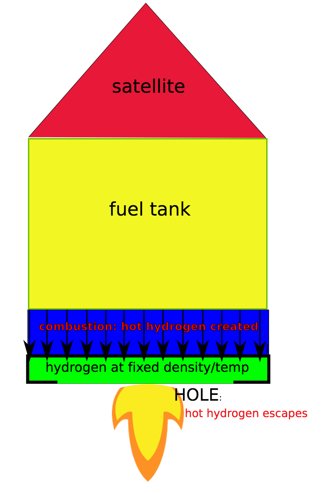
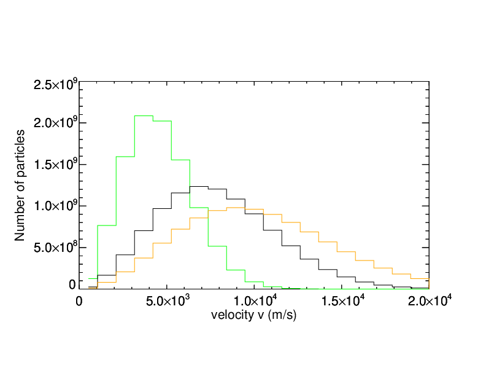
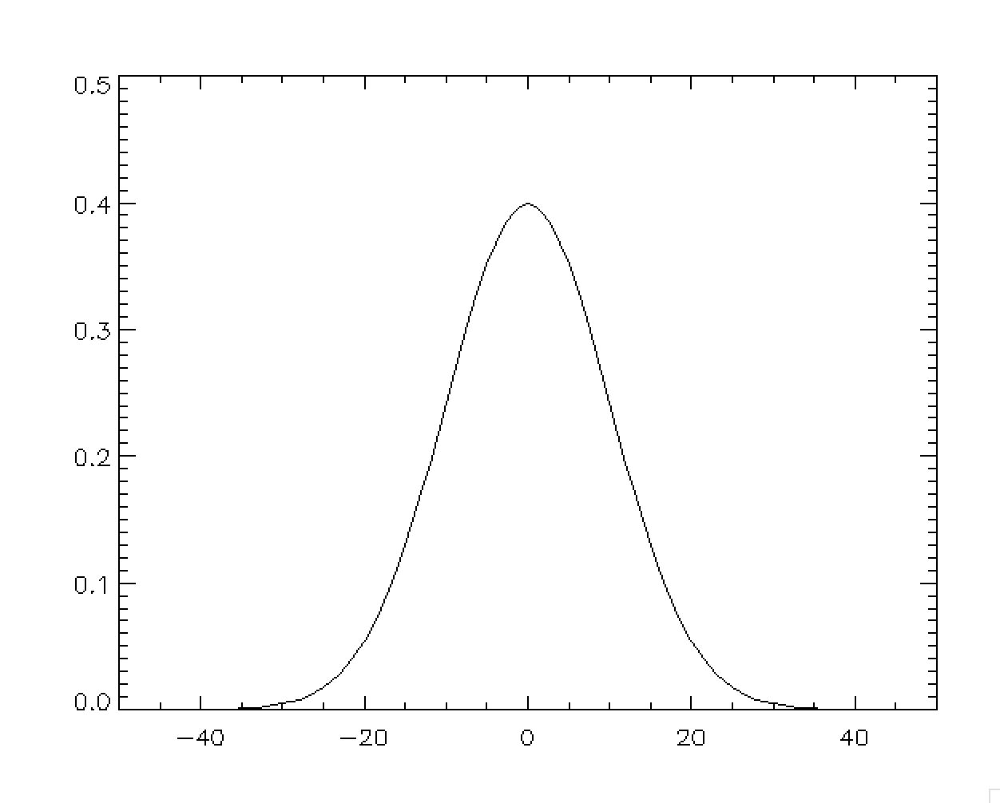

Dette er et alternativ til forelesningen i emnet. Har du gått skikkelig gjennom disse interaktive forelesningsnotatene så trenger du ikke å lese de fulle forelesningsnotatene (med unntak av oppgavene bak). All informasjonen du trenger, får du her. Du kommer til å få mange grublespørsmål og diskusjonsoppgaver, det er meningen at disse skal gjøres i grupper av minst 2, maks 4 studenter. Det er defor sterkt anbefalt at dere sitter sammen i grupper når dere går gjennom disse interaktive forelesningsnotatene, du vil få betydelig mer utbytte av dem på den måten. Hvis du har kommentarer ris/ros til disse forelesningsnotatene eller til emnet, trykk på 🙂 🙁 knappen som du finner på alle sider.
HUSK at du får mer ut av de interaktive forelesningsnotatene når du gjør de sammen med noen. Diskusjonene med andre er svært viktige.
Det er mange spørsmål/grubliser underveis, sett dere selv en tidsgrense, 1 minutt på de korte, maks 4-5 minutter på de lenger. Ha en alarm ved siden av, ellers kommer dere til å bruke alt for langt tid. Har dere ikke fått det til etter kort tid, gå videre, se svaret og lær!
Er du i det minste tvil om noe, så finnes det en FORUMknapp, trykk det og still spørsmål med en gang mens du enda husker spørsmålet!
Forrige side
 Velkommen til del 1A! Store deler av astrofysikken dreier seg om gasser og egenskaper til gasser. Dermed bør et kurs i astrofysikk begynne med en introduksjon til gass/termodynamikk. I del 1A av kurset skal du lære de grunnleggende egenskapene til gasser som du trenger til resten av kurset. Hastighetene til partiklene i en gass er tilfeldige, og mange av gassenes egenskaper kan utledes fra nøyaktig hvordan disse er tilfeldige. Derfor skal også lære en del statistikk som også kommer til nytte i flere temaer fremover. For å lære om gasser skal vi bruke en rakettmotor som et eksempel. I løpet av del 1A er målet å lage en forenklet virtuell rakettmotor som du skal få til å lette og nå unnslippingshastighet. Er du klar? Neste side
Forrige side🙂 🙁IntroduksjonFORUM Dette forelesningsnotatet tilsvarer omtrent en og en halv dobbelttime fysisk forelesning.
Her ser vi vår forenklede rakettmodell. Den grønne boksen nederst antar vi er en boks med en varm gass og med et hull nederst slik at gasspartiklene slippes ut. Det fylles hele tiden på med partikler ovenfra slik at tetthet og temperatur i boksen hele tiden er konstant selv om partikler slipper ut. Neste side
Vi skal i AST2000 begrense oss til termodynamikk om gasser som vi trenger for å forstå rakettmotoren (og senere planetatmosfærer og stjerners indre). Det aller første vi skal se på er sammenhengen mellom egenskapene til gassen og hastighetene til partiklene i gassen. Og så skal du for første, men absolutt ikke siste gang i kurset få hilse på Herr Maxwell Boltzmann.La oss zoome inn i mikroverdenen og på partiklene i en gass...
Forrige side🙂 🙁PartikkelhastigheterFORUM
Du skal i løpet av del 1A få svar på/finne ut av spørsmålene fra skjemaet. Selv om du kanskje ikke helt har innsett hvordan man lager en rakettmotor enda, så har du kanskje oppdaget at hastigheten som gasspartiklene kommer ut av motoren med er en viktig faktor her?
Hva avgjør hastighetene til partiklene i en gass? Hvis rakettens kraft avhenger av hastigheten til gasspartiklene, så er det viktig å forstå hvilke egenskaper ved gassen som bestemmer hvor fort gasspartiklene beveger seg. Noen av de viktigste egenskapene til en gass er listet nedenfor. Disse henger alle sammen med hverandre gjennom tilstandslikningen som vi skal lære om senere, men hvis du skal peke på én egenskap som du forbinder med hastigheten til gasspartiklene, hvilken kunne det være? Trykk på den du mener er viktig.
Forrige side🙂 🙁PartikkelhastigheterFORUM Godt forslag, men hverken tetthet eller trykk er det som direkte har en innvirkning på gasspartiklenes hastighet. Som vi skal komme til senere så vil tettheten og trykket henge sterkt sammen med temperaturen til gassen som er en av de størrelsene som direkte er forbundet med gasspartiklenes hastighet. Både temperaturen og massen har noe å si for gasspartiklenes hastighet. Høyere temperatur gir mer kinetisk energi til hver gasspartikkel og dermed høyere hastighet. Ved en gitt temperatur så vil tunge gasspartikler i middel bevege seg saktere enn lettere gasspartikler. Den midlere kinetiske energien som partiklene har ved en gitt temperatur er den samme, dermed må tyngre partikler i middel bevege seg saktere (Hvis $\frac{1}{2}mv^2=K$ der K er den samme, så må v bli mindre hvis m blir større).
Forrige side🙂 🙁PartikkelhastigheterFORUM
HELT RIKTIG! Både temperaturen og massen har noe å si for gasspartiklenes hastighet. Høyere temperatur gir mer kinetisk energi til hver gasspartikkel og dermed høyere hastighet. Ved en gitt temperatur så vil tunge gasspartikler i middel bevege seg saktere enn lettere gasspartikler. Den midlere kinetiske energien som partiklene har ved en gitt temperatur er den samme, dermed må tyngre partikler gjennomsnittlig bevege seg saktere (Hvis $\frac{1}{2}mv^2=K$ der K er den samme, så må v bli mindre hvis m blir større).
Forrige side🙂 🙁PartikkelhastigheterFORUM Men hvordan kan vi vite hvilken hastighet gasspartiklene har ved en gitt temperatur? Og har alle gasspartiklene samme hastighet?
Her kommer statistikken inn, nemlig hva er histogrammet av partikkelhastigheter ved en gitt temperatur? Vi skal nå lære om et svært sentralt begrep i dette kurset, som vi kommer til å bruke i mange forskjellige sammenhenger:
Partikkelhastigheter i gasser I denne videoen her lærer du litt om hvordan hastighetene til partiklene i en gass er fordelt.
Se gjerne gjennom videoen et par ganger, så du er sikker på at du har forstått. På neste side skal du teste om du forstod riktig:
Forrige side🙂 🙁PartikkelhastigheterFORUM
Trodde du at du var ferdig med spørsmålene, nå?? Ikke helt enda nei... 
På histogrammene over ser du Maxwell-Boltzmann-fordelingen for 3 forskjellige temperaturer. Hvilken av disse diagrammene tror du er for gassen med høyest temperatur? (Bruk MAKS 1 min. på å tenke)Gul kurveSort kurveGrønn kurve
Forrige side🙂 🙁PartikkelhastigheterFORUM Godt forslag, men det er nok ikke helt riktig. Ta en titt på denne videoen for å klare opp litt.Har du sett på videoen? Er det klart nå? Hvis det enda ikke er klart, se videoen en gang til og spør forleser/gruppelærere før du går videre. Neste side
Forrige side🙂 🙁PartikkelhastigheterFORUM
HELT RIKTIG! Hvis du forstod dette godt og ikke var i tvil om valget, så gå videre til neste side. Neste side Hvis du tvilte og var usikker på at det var denne kurven, ta en titt på forklaringen i denne videoen før du går videre: Neste side
Maxwell-Boltzmanns fordelingsfunksjon Da har tiden kommet for å lære litt mer om Maxwell-Boltzmann. Er du klar? Ta en liten pause før du setter igang: Trykk her for å lære om Maxwell-Boltzmann!
Oppsummering av likningene: (MERK: Det blir skrevet feil i videoen, der er rottegnet fra den ene byttet med opphøyd i 3/2 fra den andre, dette er korrekt:) $$P(v) = \left(\frac{m}{2\pi kT}\right)^{3/2}e^{-\frac{1}{2}\frac{mv^2}{kT}}4\pi v^2\ \ P(v_x) = \left(\frac{m}{2\pi kT}\right)^{1/2}e^{-\frac{1}{2}\frac{mv^2_x}{kT}}$$
Se gjerne videoen et par ganger så du er sikker på at du forstår før du går videre til neste side.
Forrige side🙂 🙁PartikkelhastigheterFORUM
Her er ut utdrag fra en av ukeoppgavene:
(merk prosjektstudenter, dere har et liknende spørsmål i utfordring A2 i del 1). Tenk gjennom hvordan du vil gå frem for å løse denne oppgaven, diskuter med en medstudent. Du trenger ikke løse oppgaven nå, det aller viktigste er at du har en ide om hvordan den kan løses. Hvis du sliter veldig med å se hva som skal gjøres, ta en titt på denne videoen her.
Hvis det er veldig klart for deg, gå direkte videre til neste side. (bruk MAKS 1-2 min, på å tenke!) Neste side
Spørsmål (bruk MAKS 1 min. på å tenke!) Hvis du har en gass med N partikler og du kjenner alle hastighetskomponentene vj til alle N partiklene i gassen. Hvordan går du frem for å finne midlere absoluttverdi av hastigheten til partiklene i gassen?
I det følgende er vj(i) hastighetskomponent j (1=x, 2=y, 3=z) til den i-te partikkelen i gassen. Summen over j fra 1 til 3 er dermed en sum over komponentene x, y og z. Er svaret...
Forrige side🙂 🙁Middel og standardavvikFORUM Det ble nok galt! Ta en titt på denne videoen for å klare opp litt.Har du sett på videoen? Er det klart nå? Hvis det enda ikke er klart, se videoen en gang til og spør forleser/gruppelærere før du går videre. Neste side
Forrige side🙂 🙁Middel og standardavvikFORUM
HELT RIKTIG! Hvis du forstod dette godt og ikke var i tvil om valget, så gå videre til neste side. Neste side
Hvis du tvilte og var usikker på at det var denne kurven, ta en titt på forklaringen i denne videoen før du går videre: Neste side
Forrige side🙂 🙁Middel og standardavvikFORUM
Er du klar for en litt større utfordring?
Grublis (bruk MAKS 3 min. på å tenke!) Du skal igjen finne midlere hastighet v til partiklene i en gass. Men denne gangen kjenner du ikke hvor mange partikler det er i gassen. Det eneste du kjenner er sannsynlighetsfordelingen P(v) som partiklene følger. Hvordan vil du nå gå frem for å finne midlere absolutthastighet av partiklene i gassen? HINT: Tenk gjerne først på P(v) som et histogram av den typen som vi kikket på tidligere. Tenk for eksempel at du fikk se en figur med n(v) på histogramform. Hvordan ville du da løst problemet?
Forrige side🙂 🙁Middel og standardavvikFORUM
Sorry, da har du ikke tenkt nok! Her kommer grublisen en gang til:
Grublis (gi deg selv 2 min. til for å tenke) Du skal igjen finne midlere hastighet v til partiklene i en gass. Men denne gangen kjenner du ikke hvor mange partikler det er i gassen. Det eneste du kjenner er sannsynlighetsfordelingen P(v) som partiklene følger. Hvordan vil du nå gå frem for å finne midlere absolutthastighet av partiklene i gassen? HINT: Tenk gjerne først på P(v) som et histogram av den typen som vi kikket på tidligere. Tenk for eksempel at du fikk se en figur med n(v) på histogramform. Hvordan ville du da løst problemet?
Har du diskuter med medstudenter? Har du gått deg en kjapp tur rundt Blindern? Har du stått på hodet?
Ikke gå til neste side før du har prøvd alle disse tingene og ihvertfall har en vag ide...
Forrige side🙂 🙁Middel og standardavvikFORUM
For å finne svaret på grublisen, ta en titt på denne videoen som også forteller deg hvordan du kan finne middelverdien til en funksjon f(v) av f.eks. hastigheten til en gass. Kort oppsummering: ⟨f(v)⟩ = ∫0∞f(v)P(v)dv Forstår du nå hvordan du kan finne middelverdien til både hastigheten og andre størrelser i gassen? Forstår du nå hvordan man generelt tar en middelverdi i statistikk hvis du kjenner fordelingsfunksjonen? Se videoen igjen hvis du er usikker!
Puhhhh, da kan du slappe godt av, finne frem kaffekoppen og helle din favorittdrikk (te, selvfølgelig) oppi. Legg deg strak ut på gulvet, pust med magan, lukk øynende og pust inn, ja, pust inn O2-molekylene som har en hastighet på.....NEIIIII det var pause nå! Noen minutter før du fortsetter!
Forrige side🙂 🙁Middel og standardavvikFORUM
Vi skal igjen se på et utdrag av en ukeoppgave, fra oppgave 1A5:
(prosjektstudenter, dere har et liknende spørsmål i utfordring A3, del 1). Tenk gjennom og diskuter med medstudenter hvordan du vil gå frem for å løse oppgaven. Når du har en ide, gå videre til neste side (tenk i MAKS 1-2 min.!).
Forrige side🙂 🙁Middel og standardavvikFORUM
Hvis du er usikker på hvordan du løser oppgaven, så kan du få noen hint i denne videoen. La oss se på en utfordring til:
I figuren ser du Maxwell-Boltzmannfordelingen for vx. Fra figuren, anslå hva den midlere x-komponenten av hastigheten er i denne gassen? (altså gjennomsnittsvedien av x-komponenten av hastigheten) Tenk i maks 30 sekunder!)0.5 × 104m/s1 × 104m/s0m/s
Forrige side🙂 🙁Middel og standardavvikFORUM Det ble nok galt! Ta en titt på denne videoen for å klare opp litt.Har du sett på videoen? Er det klart nå? Hvis det enda ikke er klart, se videoen en gang til og spør forleser/gruppelærere før du går videre. Neste side
Forrige side🙂 🙁Middel og standardavvikFORUM
HELT RIKTIG! Hvis du forstod dette godt og ikke var i tvil om valget, så gå videre til neste side. Hvis du tvilte og var usikker på svaret, ta en titt på forklaringen i denne videoen før du går videre: Neste side
Forrige side🙂 🙁Middel og standardavvikFORUM
La oss kikke på den samme figuren en gang til:
Kan du tenke deg hva bredden til kurven betyr? Hva sier det om gassen hvis denne kurven blir bredere eller smalere? Tenk gjennom (maks 1 min!) og diskuter!
Forrige side🙂 🙁Middel og standardavvikFORUM
Vi tar et spørsmål til før du får svar på forrige spørsmål. I statistikk finnes det en størrelse som heter varianse og er definert som $$\sigma^2 = \frac{1}{N}\sum_{i=1}^N(v_i - \langle v\rangle)^2,$$ og størrelsen σ heter standardavviket (standard deviation på engelsk) som altså er kvadratroten av variansen. Her er summen i over alle N partikler i gassen. Kan du finne en fysisk tolkning av σ ved å se på likningen? Kan en eller flere av disse være en god tolkning?
σ er et mål på temperaturen til gassen
σ er et mål på gjennomsnittlig hastighet til partiklene i gassen
σ er et mål på høyden til kurven P(v) og dermed høyeste sannsynlighet
σ er et mål på bredden av kurven P(v)
Tenk deg godt om (maks 1 min!) og si hva du mener passer best til din tolkning: 1234
Forrige side🙂 🙁Middel og standardavvikFORUM Det ble nok galt! Prøv å kikk på likningen en gang til for å se om du forstår hvorfor det er galt. Kanskje gir det nye perspektiver å se likningen hvitt på svart?$$\sigma^2 = \frac{1}{N}\sum_{i=1}^N(v_i - \langle v\rangle)^2,$$
Forrige side🙂 🙁Middel og standardavvikFORUM
HELT RIKTIG! Uttrykket gir deg både bredden til P(v) og temperaturen til gassen, det er en sammenheng mellom disse to størrelsene!
Forrige side🙂 🙁Middel og standardavvikFORUM
I denne videoen blir forhåpentligvis alt klart når det gjelder bredden på kurven, hastighet til partiklene, temperaturen til gassen, og standardavviket! Se gjennom videoen et par ganger, dette er veldig sentralt stoff!
Merk at på en fysisk forelesning så kommer jeg omtrent hit etter en dobbelttime. Tiden har kommet for å vente til en annen dag med resten av dette forelesningsnotatet. Da kan du starte her igjen. Det ble mange tyskere å bli kjent med gitt. Først Herr Boltzmann og nå introduseres Herr Gauss... Bare kom inn Carl Friedrich, døra er åpen!
Som du har sett så er det statistikk vi bruker for å beskrive gasser. Dermed trenger vi å lære litt grunnleggende statistikk:
‘ 
Figuren viser en Gaussisk sannsynlighetsfordeling. På x-aksen kan det være mulige utfall for en hvilken som helst tilfeldig størrelse og på y-aksen så vises sannsynligheten for dette utfallet.
Spørsmål Ved å se på kurven, og uten å slå opp noe sted, kan du gjette omtrent på hvordan funksjonen som beskriver en Gaussisk kurve må se ut? Funksjonsuttrykket må selvfølgelig inneholde variabelen x, samt middelverdien for den tilfeldige størrelsen x gitt ved μ og standardavviket til fordelingen gitt ved σ.
Når du har et forslag til hvordan funksjonen kan se ut, så kan du gå til neste side (der står svaret). Det er svært viktig at du har prøvd selv først, men ikke bruk mer enn 1-2 min. på dette!.
Forrige side🙂 🙁Gaussisk fordelingFORUM
Gaussisk sannsynlighetsfordeling: $$P(x) = \frac{1}{\sqrt{2\pi}\sigma}e^{-\frac{1}{2}\frac{(x-\mu)^2}{\sigma^2}}$$ Som Maxwell-Boltzmann så er dette en sannsynlighetstetthet, noe som betyr at du må gange opp med et lite intervall Δx eller integrere over dx for å få sannsynlighet.
Sammenlikn med de to Maxwell-Boltzmann-fordelingsfunksjonene for vx og for v: $$P(v) = \left(\frac{m}{2\pi kT}\right)^{3/2}e^{-\frac{1}{2}\frac{mv^2}{kT}}4\pi v^2\ \ P(v_x) = \left(\frac{m}{2\pi kT}\right)^{1/2}e^{-\frac{1}{2}\frac{mv^2_x}{kT}}$$
Avgjør om noen av disse er Gaussiske fordelingsfunksjoner: Ingen av dem er GaussiskKun P(vx) er Gaussisk Kun P(v) er GaussiskBegge er Gaussiske
Forrige side🙂 🙁Gaussisk fordelingFORUM Nei nå tror jeg egentlig ikke at du tenkte deg så veldig godt om!!! Trykk på knappen for å gå tilbake til forrige side, se nøye på funksjonene en gang til: kan du skrive om noen av Maxwell-Boltzmannfordelingene på formen til en Gausskurve?
Forrige side🙂 🙁Gaussisk fordelingFORUM
HELT RIKTIG! Det er kun P(vx) som kan skrives som en Gausskurve. For det første så er en ting klart: husk at funksjonen P(v) ikke er symmetrisk! En Gausskurve er symmetrisk, dermed kan ikke P(v) være Gaussisk.
Da er vi enige om at Maxwell-Boltzmannfordelingen for hastighetskomponentene, $$P(v_x) = \left(\frac{m}{2\pi kT}\right)^{1/2}e^{-\frac{1}{2}\frac{mv^2_x}{kT}}$$ kan skrives som en Gausskurve: $$P(x) = \frac{1}{\sqrt{2\pi}\sigma}e^{-\frac{1}{2}\frac{(x-\mu)^2}{\sigma^2}}$$ Det øverste uttrykket her er altså vx-fordelingen og nederst er en generell Gausskurve. Ved å sammenlikne, finn en verdi eller et uttrykk for (1) gjennomsnittet μ og (2) standardavviket σ til P(vx). Ikke gå videre før du har svaret. Begge disse svarene er svært sentrale resultater som du får bruk for mange ganger fremover. Du må forstå hvordan du finner μ og σ her.
Forrige side🙂 🙁Gaussisk fordelingFORUM
Tiden har kommet for å se litt nærmere på Gaussfunksjonen og oppdage noen svært viktige egenskaper:
Den Gaussiske sannsynlighetsfordelingen I denne videoen får du en nærmere forklaring på hvilke viktige egenskaper den Gaussisk sannsynlighetsfordelingen har og hvordan den henger sammen med Maxwell-Boltzmannfordelingen P(vx).
Når du du har sett videoen og forstår hva den prøver å fortelle, så kan du teste forståelsen din på
Forrige side🙂 🙁Gaussisk fordelingFORUM
Fikk du med deg forskjellen på standardavviket σ og FWHM i videoen?
Hvis ikke, gå tilbake og sjekk videoen en gang til! Merk deg også den matematiske sammenhengen mellom størrelsene: $$\sigma=\frac{\mathrm{FWHM}}{\sqrt{8\ln{2}}}$$
Forrige side🙂 🙁Gaussisk fordelingFORUM
Du har nå lært om 68-95-99.7-regelen: Hvis du har en Gaussisk sannsynlighetsfordeling P(x) for en tilfeldig størrelse x, så er det 68% sannsynlig at den tilfeldige verdien du trekker for x er innenfor et standardavvik foran eller bak gjennomsnittsverdien, 95% sannsynlig at den ligger innenfor 2 standardavvik fra gjennomsnittet og 99.7% sannsynlig at den ligger innenfor 3 standardavvik fra gjennomsnittet.
Spørsmål Men hvordan ville du gå frem for å vise dette? Dvs. hvordan kunne du analytisk gå frem for å utlede disse tallene? Du skal ikke gjøre regningen, men tenke hvordan du ville gått frem.
Svaret står på neste side, så tenk deg godt om før du går videre... (maks 2 min. tenketid!) Neste side
Forrige side🙂 🙁Gaussisk fordelingFORUM ÅJASSÅ DU! DU TRYKTE PÅ KNAPPEN UTEN Å HA TENKT GJENNOM SPØRSMÅLET!!!
Eller kanskje du hadde tenkte gjennom det?? Uansett, hvis du ikke hadde det, så får du en ny sjans her. Svaret står først på neste side...
Forrige side🙂 🙁Gaussisk fordelingFORUM
Du kan finne f.eks. 68%-tallet ved å integrerer sannsynligheten. Hva er sannsynligheten for å trekke et tall x som ligger mellom tallene − σ og σ? Hvis du ikke har det klart for deg, gå tilbake til denne siden for å se videoen om sannsynlighetsfordelinger en gang til, dette er viktig! Hvis du fikk det til, her er svaret: $$\int_{\mu-\sigma}^{\mu+\sigma}\frac{1}{\sqrt{2\pi}\sigma}e^{-\frac{1}{2}\frac{(x-\mu)^2}{\sigma^2}}dx = 0.6827...$$ Når du har forstått denne så er du klar for neste utfordring, på neste side...
Forrige side🙂 🙁Gaussisk fordelingFORUM
Før du på neste side skal starte med noen real-life-problemer, la oss sjekke om du egentlig har forstått hva vi driver med. Henger du med, så skal svaret på denne komme straks. Hvis du tar Maxwell-Boltzmanns fordelingsfunksjon for hastigheter P(v) (den litt kompliserte funksjonen vi så tidligere). Hvis vi integerer den ∫0∞P(v)dv = ? hva får vi da? Ingen matematikk er nødvendig. Det er jo opplagt, denne kan jeg svare på!Tja, jeg trodde jeg hang med, men kanskje jeg ikke er helt sikker...
Forrige side🙂 🙁Gaussisk fordelingFORUM Du har nok ikke helt kontrollen på stoffet enda. Anbefaler sterkt at du går gjennom de følgende sidene en gang til, og har dette spørsmålet i hodet mens du går gjennom stoffet. Når du kommer frem hit neste gang så får du en ny sjans til å finne svaret på spørsmålet, hvis ikke spør foreleser eller gruppelærer før du går videre! Ta meg til de relevante sidene for å repetere!
Forrige side🙂 🙁Gaussisk fordelingFORUM
STRÅLENDE! Da har du nok innsett at integralet blir slik, fordi man jo integrerer over alle mulige hastigheter som partikkelen kan ha. Og integralet over P(v) gir deg sannsynligheten for dette hastighetsintervallet fra 0 til 1. Sannsynligheten for at partikkelen har en av alle de mulige hastighetene som den kan ha er jo 100% eller da 1.
Forrige side🙂 🙁Du er ferdig med forelesning 1 av 2 i del 1A.. Dette tilsvarer omtrent en og en halv fysisk dobbelttime. Jeg kommer omtrent hit, kanskje litt lenger, etter den første uka (siden den også inkluderer introduksjon). Du bør nå:
vite hvilke egenskaper til en gass som avgjør partiklenes hastigheter
kunne finne hastighetsfordelingen til partiklene i en ideel gass
vite hva en Maxwell-Boltzmann-fordeling er for noe og kunne bruke den
kunne beregne gjennomsnitt og standardavvik for en gitt størrelse, både fra et datasett og fra en gitt fordelingsfunksjon
kunne tolke og forstå begrepet standardavvik
kunne tegne en Gaussisk funksjon og kunne skrive ned likningen for den
vite hva FWHM er og hvor mange punkter man forventer å finne utenfor 1, 2 og 3 standardavvik i en Gaussisk fordeling
Flott hvis du nå kan klikke på smilefjesene over og fortelle hva du synes om dette interaktive forelesningsnotatet. Hva var bra og nøyaktig hva kan forbedres? All ris og ros mottaes med takk!